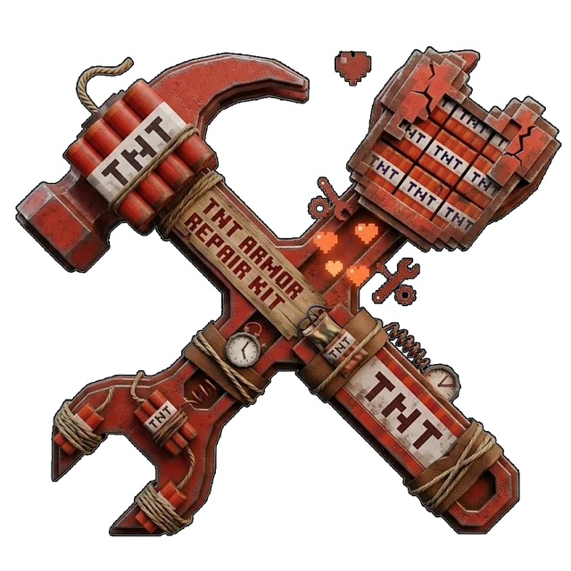

ТНТ-БРОНЯ
Полный комплект из четырёх частей, собранный из железной брони и динамита. Каждый полученный удар копит заряд, а полная полоска по клавише R превращается во взрыв радиусом от 5 блоков. Чинится ремонтным ТНТ-набором за секунду. Продаёт её житель-подрывник.
Комплект
Нажимай на слоты: надевай и снимай части, полоска брони пересчитается как в игре. Цифры взяты из ModArmorMaterials.ZITRAKS.
ТНТ против ванили
Полный комплект. Прочность = сумма всех четырёх частей.
Детонация
Энергия копится от урона, который получаешь ты (в полном комплекте). Зомби на полигоне сам лезет драться, а ещё можно подставиться под стрелу или крипера. Когда полоска заполнится, жми R: две секунды частиц, и взрыв сносит землю, камень и постройки. Всё посчитано по формулам из кода мода.
- Получай урон в полном комплекте. Энергия = урон × 2.5, но не меньше 2 и не больше 35 за удар. До 100.
- Полоска на месте опыта. 10 красных делений. Полная полоска = звук опыта и готовность.
- Жми R. 40 тиков (2 с): круг у ног, спираль вверх, опускающаяся пентаграмма. Потом бабах, а броня теряет 10% прочности.
Зачарования
На ТНТ-броню есть ровно два своих зачарования, и тянут они в разные стороны: Бомбардир раздувает радиус, Миротворец гасит разрушения. По коду они работают одновременно, если надеть оба. Всё, что выставишь здесь, сразу применяется к взрыву на полигоне выше.
Крафт и починка
Каждая часть собирается из железной части и ТНТ вокруг неё. Чинится броня тоже динамитом.
Материал ремонта у ТНТ-брони: блок ТНТ, как железный слиток у железной.
Две побитые одинаковые части складываются в одну: прочность суммируется плюс 5% бонуса. Ванильная механика, но зачарования на точиле слетают.
Ремонтный ТНТ-набор
Появился в версии 1.0.2. ПКМ с набором в руке разом чинит все четыре части до полной прочности, без наковальни и опыта. Работает только в полном комплекте, тратит один набор. Износ здесь общий с полигоном: взорвался там, чинишь тут. Нажми на часть, чтобы снять или надеть.

У подрывника на уровне Подмастерье: 12 изумрудов, до 4 штук.
Житель-подрывник
Новая профессия из версии 1.0.4. Торгует ТНТ, редстоуном, бронёй и книгами «Бомбардир». Жми «Обменять»: житель получает опыт и открывает новые сделки, как в игре. Покрути жителя мышкой или пальцем.
Хронология
Как пункт рос от версии к версии.
Достижения
Ветка ТНТ-брони: 9 ачивок одной цепочкой, все скрытые. Всё как в игре: ачивку не видно, пока её не получишь, и тогда она появляется в ветке. Нажми на рамку, чтобы посмотреть условие. Всё можно получить прямо на этой странице.
Минное поле
Те же ачивки, только под блоками ТНТ: пока ачивка не получена, её клетка не взорвана. Шнур между клетками загорается, когда открыты обе соседние.
Фитиль догорел
Ты долистал до конца.